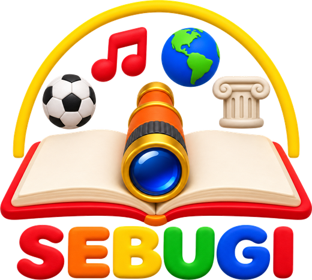

Five Super Bowls: read the story and guess which game it is.
A free two-minute game. For each game you read a few facts, without the team names, and pick between two pairs of teams. You find out right away if you got it right.
Game 1 of 5
In the app you will find dozens of historic games, with the key facts for each. It is free and needs no sign-up.
Open the app and keep playingLike it? The full app is here: football.sebugi.com